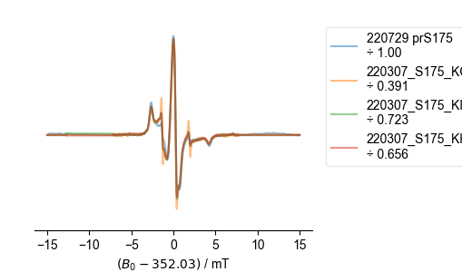
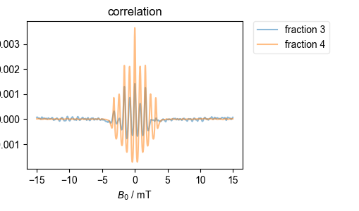
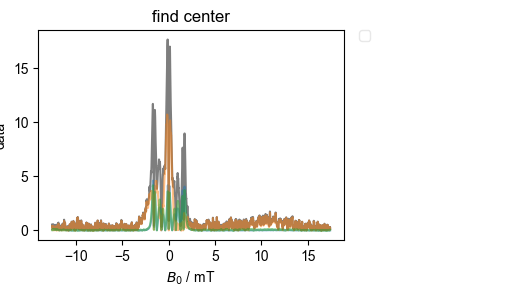
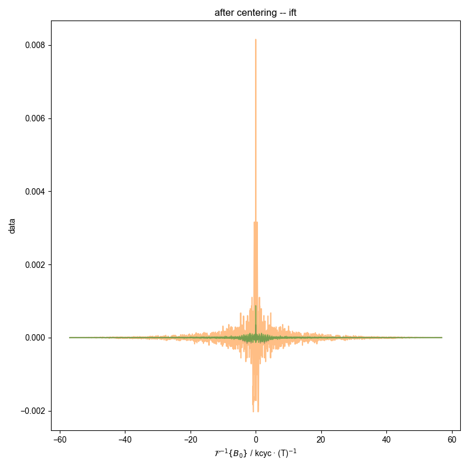

Note
Go to the end to download the full example code
EPR correlation alignment¶
While we can align by microwave frequency and normalize according to peak-to-peak amplitude, it scan still be hard to identify subtle differences between ESR spectra, and small imperfections – such as free MTSL – can play an outsized role.
Therefore, here, we use correlation to align the spectra and then use “dot-product scaling” to normalize them. By “dot-product scaling” we mean scaling the amplitude of one vector (here a spectrum, \(\mathbf{b}\)) relative to a reference (here \(\mathbf{a}\)) to minimize the residual between the two – i.e. we minimize the expression
by varying the scaling constant \(c\). The solution to this is
In order to do all this, we need a common x-axis that we can use for correlation, etc. Here, we look for the fields that are furthest left and furthest right, and for the smallest spacing between field samples – we use these values to construct a (therefore all-inclusive) x axis.
Also, for the purposes of dot-product scaling, it is better to scale the less noisy spectrum (\(\mathbf{b}\) above) relative to the noisier spectrum (\(\mathbf{a}\) above) – i.e. above, we want \(\mathbf{b}\) to be less noisy. Here, we simply find the largest spectrum in the group (assuming it is least noisy) and use it as \(\mathbf{b}\).
- 

- 
- 


- 
---------- logging output to /home/jmfranck/pyspecdata.0.log ----------
for d, before {'FT_start_freq': {'$B_0$': 0.33729000000000003}}
for d, before {'FT_start_freq': {'$B_0$': 0.33729000000000003}}
for d {'FT_start_freq': {'$B_0$': 0.33729000000000003}}
for d, before {'FT_start_freq': {'$B_0$': 0.33729000000000003}}
for d {'FT_start_freq': {'$B_0$': 0.33729000000000003}}
for d, before {'FT_start_freq': {'$B_0$': 0.33729000000000003}}
for d {'FT_start_freq': {'$B_0$': 0.33729000000000003}}
{'width': 0.7, 'filename': 'ESR_align_example.pdf'}
1: Raw |||mT
2: correlation |||mT
3: aligned, autoscaled |||mT
4: u domain |||kcyc · (T)$^{-1}$
5: u domain -- phase, mag as error
6: u domain -- phase, propagate error
7: ift, indiv centered |||kcyc · (T)$^{-1}$
8: centered spectra -- ift |||kcyc · (T)$^{-1}$
9: centered spectra
/home/jmfranck/git_repos/pyspecdata/pyspecdata/figlist.py:735: UserWarning: This figure includes Axes that are not compatible with tight_layout, so results might be incorrect.
plt.gcf().tight_layout()
from pylab import *
from pyspecdata import *
from pyspecProcScripts import QESR_scalefactor
from collections import OrderedDict
import matplotlib as mpl
import pickle
import numpy as np
mpl.rcParams.update(
{
"figure.facecolor": (1.0, 1.0, 1.0, 0.0), # clear
"axes.facecolor": (1.0, 1.0, 1.0, 0.9), # 90% transparent white
"savefig.facecolor": (1.0, 1.0, 1.0, 0.0), # clear
}
)
def calc_phdiff(self, axis):
"calculate the phase gradient (cyc/Δx) along axis, setting the error appropriately"
if self.get_ft_prop(axis):
dt = self.get_ft_prop(axis, "df")
else:
dt = self.get_ft_prop(axis, "dt")
A = self[axis, 1:]
B = self[axis, :-1]
A_sigma = A.get_error()
A_sigma = 1 if A_sigma is None else A_sigma
B_sigma = B.get_error()
B_sigma = 1 if B_sigma is None else B_sigma
self.data = np.angle(A.data / B.data) / 2 / pi / dt
self.setaxis(axis, A.getaxis(axis))
self.set_error(
sqrt(
A_sigma**2 * abs(0.5 / A.data) ** 2
+ B_sigma**2 * abs(0.5 / B.data) ** 2
)
/ 2
/ pi
/ dt
)
return self
init_logging(level="debug")
filenames_w_labels = [
("220307_S175_KCl.DSC", "220307_S175_KCl"),
("220729_prS175.DSC", "220729 prS175"),
("220307_S175_KI.DSC", "220307_S175_KI"),
("220307_prS175_KH2PO4.DSC", "220307_S175_KH2PO4"),
]
Bname = "$B_0$"
all_files = OrderedDict()
aligned_autoscaled = {}
all_scaling = {}
# {{{ load all files first and do the following:
# - determine ref_axis which spans all the axes with the finest
# resolution → ref_axis
# - all_files is an ordered dict of all files
# - ref_spec, which is the label/key of the largest spectrum
all_axes_extents = []
maxval = 0
for j, (filename, label_str) in enumerate(filenames_w_labels):
# {{{ load, rescale
d = find_file(filename, exp_type="francklab_esr/Farhana")
d.setaxis(Bname, lambda x: x / 1e4).set_units(Bname, "T")
d /= QESR_scalefactor(d)
if "harmonic" in d.dimlabels:
d = d["harmonic", 0]
d -= d[Bname, :50].C.mean(Bname).data
all_axes_extents.append(
tuple(d.getaxis(Bname)[r_[0, -1]]) # min, max
+ (diff(d.getaxis(Bname)[r_[0, 1]]).item(),) # difference
)
all_files[label_str] = d
temp = d.data.max() - d.data.min()
if temp > maxval:
maxval = temp
ref_spec = label_str
# }}}
minB, maxB, dB = zip(*all_axes_extents)
minB = min(minB)
maxB = max(maxB)
dB = min(dB)
ref_axis = r_[minB : maxB + dB : dB]
# }}}
with figlist_var(width=0.7, filename="ESR_align_example.pdf") as fl:
# {{{ arrange the figures in the PDF
fl.par_break() # each fig on new line
fl.next("Raw")
fl.par_break() # each fig on new line
fl.next("correlation", legend=True)
fl.par_break()
fl.next("aligned, autoscaled", figsize=(3 * 1.618, 3), legend=None)
# }}}
# {{{ pull the reference (largest) up front
all_files.move_to_end(ref_spec, last=False)
# }}}
all_phdiff = [] # to store all the phase differences?
for j, (label_str, d) in enumerate(
(k, v) for (k, v) in all_files.items() if v != ref_spec
):
# {{{ just show the raw data
fl.next("Raw")
fl.plot(d, label=label_str, alpha=0.5)
# }}}
d = d.interp(Bname, ref_axis.copy(), kind="linear")
if j == 0:
ref_spec_Bdom = d.C
ref_spec = d.C
ref_spec.ift(Bname, shift=True)
ref_spec.run(conj)
scaling = 1
print(
"for d, before",
{
k: v
for k, v in ref_spec.other_info.items()
if k.startswith("FT_start")
},
)
else:
normfactor = d.data.max()
print(
"for d, before",
{
k: v
for k, v in ref_spec.other_info.items()
if k.startswith("FT_start")
},
)
d.ift(Bname, shift=True)
print(
"for d",
{
k: v
for k, v in ref_spec.other_info.items()
if k.startswith("FT_start")
},
)
correlation = d * ref_spec
correlation /= normfactor
correlation.ft_clear_startpoints(
Bname, f="reset"
) # I want to calculate things in terms of an offset,
# which can be positive or negative, and need to shift in
# the next step
correlation.ft(Bname, shift=True)
fl.next("correlation")
fl.plot(correlation, label=label_str)
thisshift = correlation.real.argmax(Bname).item()
d *= exp(-1j * 2 * pi * d.fromaxis(Bname) * thisshift)
d.ft(Bname)
a = d
b = ref_spec_Bdom
scaling = (a * b).sum(Bname) / (b * b).sum(Bname)
scaling = scaling.real.item()
fl.next("aligned, autoscaled")
aligned_autoscaled[label_str] = d / scaling
all_scaling[label_str] = scaling
fl.plot(
aligned_autoscaled[label_str],
label=f"{label_str}\nscaling {scaling}",
alpha=0.5,
)
fl.next("u domain")
if (
d.get_ft_prop(Bname, ["start", "time"]) is None
): # this is the same
d.ift(Bname, shift=True)
else:
d.ift(Bname)
fl.plot(d, label=f"{label_str}\nscaling {scaling}", alpha=0.5)
fl.next("u domain -- phase, mag as error")
phdiff = d[Bname:(0, None)]
phdiff = phdiff[Bname, 1:] / phdiff[Bname, :-1]
alphaforpoints = abs(d[Bname:(0, None)][Bname, :-1])
alphaforpoints /= alphaforpoints.max()
scatter(
phdiff.getaxis(Bname),
phdiff.angle.data,
alpha=0.5 * alphaforpoints.data,
s=10,
)
xlim(0, 0.8e4)
fl.next("u domain -- phase, propagate error")
phdiff = calc_phdiff(d[Bname:(0, None)], Bname)
arb_scaling = 20 # the weighted sum will need to be scaled up
alphapoints = (
1 / phdiff.get_error()
) # to show what a weighted sum looks like
alphapoints[~np.isfinite(alphapoints)] = 0
alphapoints /= sum(alphapoints)
sc = scatter(
phdiff.getaxis(Bname),
phdiff.data,
alpha=np.clip(alphapoints.ravel() * arb_scaling, 0, 1),
s=10,
)
phdiff.mean_weighted(Bname)
determined_phdiff = phdiff.item()
axhline(determined_phdiff, c=sc.get_facecolors()[-1], alpha=0.2)
xlim(0, 0.8e4)
d *= exp(-1j * 2 * pi * determined_phdiff * d.fromaxis(Bname))
fl.next("ift, indiv centered")
fl.plot(d)
all_phdiff.append(determined_phdiff)
avg_phdiff = mean(all_phdiff)
for label_str, d in all_files.items():
d *= exp(+1j * 2 * pi * d.fromaxis(Bname) * avg_phdiff)
fl.next("centered spectra -- ift")
fl.plot(d)
fl.next("centered spectra")
d.ft(Bname)
fl.plot(d, human_units=False)
fl.next("aligned, autoscaled")
xlim(346, 358)
mpl.pyplot.legend("", frameon=False)
# gca().get_legend().remove()
fl.autolegend_list[fl.current] = False
fl.adjust_spines("bottom")
savefig("single_mutant_overlay.pdf")
title("")
xlabel("$B_0$ / mT")
ylabel("")
gca().set_yticks([])
Total running time of the script: (0 minutes 4.217 seconds)